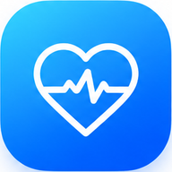

İyi yaşam, iyi gelecek.
Sağlıklı alışkanlıkların için küçük bir adım.
Kendine iyi bak.
Sağlığın ve kişisel hedeflerin, senin kontrolünde.
Dumansız Yaşam
Bugün kendin için bir adım at.
Türk lirası
adet · tahmini
Yeni bir başlangıç
Sağlık yolculuğunu takip et.
Bugün nasılsın?
Son 7 gün · Kullanma isteği
Günlük kayıtlardaki isteğin şiddeti. Boş günler kaydedilmemiştir.
Sağlık
İlk adımın değerli.
Bilimsel kaynaklar ve açıklama
Sigara kaynaklı karbonmonoksit ve kanser riski zaman çizelgesi elektronik sigara için uygulanmaz. Bu zaman çizelgesi genel sağlık bilgilerine dayanır; kan testi veya kişisel risk ölçümü değildir. İyileşme kişiden kişiye değişir. Nikotin bandı, sakızı veya başka nikotin kaynakları nikotinle ilgili aşamayı etkiler.
NHS · Sigarayı bırakınca neler olur?
Hedefler
Başarılarım
Kendime bir ödül
Profil
izkarwell. Cloud
Google hesabınla giriş yap. Bu geliştirme sürümünde sağlık kayıtları yalnızca cihazda kalır.
Giriş sistemi başlatılıyor…
Kişisel ayarlar
Başlangıç tarihi, tüketim bilgileri ve görünüm.
Bir kez kullandım
Bir kayma geçmişteki emeğini silmez. İstersen kaydet ve yeniden devam et.
Yedekleme ve cihaz aktarımı
Telefon ve bilgisayar arasında kayıtlarını bir JSON dosyası ile taşıyabilirsin. Otomatik eşitleme yoktur. Yedek kişisel bilgi içerir; güvenli sakla.
Su Tüketimi
Bugünkü kayıtlar
Son 7 gün
Yalnızca kaydettiğin su miktarı gösterilir.
Kişisel su hedefi
Bu hedef kişisel tercihtir; tıbbi öneri değildir. Sıvı ihtiyacı kişiye göre değişir. Doktorunun sıvı kısıtlaması varsa ona uy.